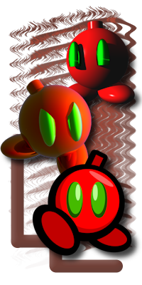
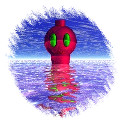
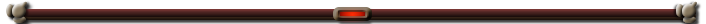

Character Bios
This is a page with character descriptions for most of my characters. This all doesn't really mean too much now but when I make more animations including these characters it'll become "more relevant," not that these bios are needed for a proper viewing experience.
Some of these characters haven't been featured in this site's animations nor any of my renders. Exclusive, I know. Also the animations present on the site aren't really indicative of the characters personalities yet, but these are like ideal personalities that would be true over the ones in the animations.
And no, none of these characters are self inserts.
Some of these characters haven't been featured in this site's animations nor any of my renders. Exclusive, I know. Also the animations present on the site aren't really indicative of the characters personalities yet, but these are like ideal personalities that would be true over the ones in the animations.
And no, none of these characters are self inserts.

Supreno
He's the face of the Super Render 64 identity! He's been here from the very start, and don't worry. He's not going anywhere. It's Supreno!
With a design very loosely inspired by a bob omb, Supreno is one of the many bomb-shaped objects in the SR64 universe. He's sort of the star of the show. His branding is on every corner of the site, he's the go-to character for animations. All of that attention doesn't really keep the ego at bay. And it doesn't help that Supreno is somewhat of an agent of chaos. Nevertheless, once his mind is on something, good or bad, nothing can stop him.
...except anything that requires hands. The main bomb is severly lacking in limbs, and unfortunately he doesn't get the "armless character makes whatever they're holding float" treatment. But that just gives him another excuse to boss around his two roommates.
Jami
Jami was the first humanoid character (source desperately needed) I made for Bryce and that's very telling. Among having a short temper and a general distain for Supreno, Jami (or at least the 2D iteration) hates the chunky spherical 3D version of herself.
But about that short temper. It doesn't help that she lives with two very difficult people being Supreno and Martar. She's also the most capable of the three due to her genetic lottery jackpot of having arms, legs, and a face! This makes her the least detestable of the three, leading their social circle to kind of revolve around her relations.
She's also a bit gloatful given that she's the most attractive of the three by a mile (again, the arms-legs-face combo). She may not always be the most rational in an argument, but she'll always be the most physical.

Martar
Out of the main three, Martar is definitely the calmest. Though he did use to hang out with another crowd of only robots which was a lot more tense. However it's easy to be the most sane person in the room when the other two are having a battle of words. Really loud words too.
Martar specialises in cooking. You'd think a robot wouldn't be good at cooking given the soul that you'd expect to put in to your creation, but that's more an argument for Martar having a soul. However, he doesn't even eat food! His "digesting" is just lifting his head lid and letting the food dissolve in acid. So clearly out of the main three, none of them are the smartest.
Despite his cool composure, sometimes Supreno and Jami's antics can wear him thin. But it only takes one night without his superb cooking for them to give him the respect he deserves.
Moon Float
Moon Float is a bit of an odd guy. On one hand, he's very kind and collected, probably the most respectful out of the people he hangs around. But that's the other thing, he's surrounded by people who aren't too respectful. He lives with the Cultist and the two often... transcend reality...
They're also neighbours to Supreno, Jami, and Martar, so whatever hijinks they get into usually includes Moon Float too, whether he wants to be apart of it or not.
Oh, and he's also made of rubber. Throw him into the sky and he might just escape our atmosphere.
Cultist
The Cultist, or Cultist, Culty, or really any version of Cultist with random letters removed, is a character from one of my old game jam games. She's well versed in gun battles and even knows a bit of dark magic. She can easily fend off any foes that cross her.
Though she can't as easily fend off the urge to get a little bit high, just a wee bit high. I mean, what good is that dark magic if it's all attacks and defense and no fun and games!
Moon Float tends to trust her a lot, so usually he joins in on the fun too.
"Blu" and "Purp"
In the original version of CTC the pages were filled with renders featuring Supreno as well as Blupreno and Supurpo. Although the three are on good terms, Supreno tends to leave Blu and Purp in the dust for Jami and Martar.
Blu is a bit obsessed with Supreno. She'll often hang around Jami or even the Cultist just for a hotline to him. But when Supreno is out of the picture, Blu is a lot sweeter and a lot less sadistic, often showing kindness where Purp shows laziness.
Because Purp is really just lazy. He sees himself as Supreno's bro, though that relationship is mainly one-way. However amidst long stretches of snoozing Purp does show signs of intellect and maturity, often being the most rational person for Blu to vent her desires to.
onreGrey and onreGrid
onreGrey and onreGrey are like two rotten tomatoes in a dirt patch. They aren't sweet at all, but they're kind of funny to look at.
onreGrey is always trying to cause trouble. Shit-sturring is his specialty, but this leads them to be excluded from a lot of the gang's activities. onreGrid is also a mischeif maker at heart, though he can easily lead you to believe he only does what he does because Grey is doing it. They've got a lot of simpathy points they're willing to cash in.
Together they make the perfect duo to foil a perfectly benine day!
The RIAFOTW Crowd
Before settling with Supreno and Jami, Martar used to hang with a crowd of robots, namely Mono, Sola, and Poise. These four lived life in a dystopian robot city, but after Martar left the other three were left with no other choice but to haunt him in his new habitat.
Mono is the least serious of the bunch, though it's hard to be serious when you're a glorified unicycle. Martar respects him deeply, though sometimes his ambitions can get in the way of his intellect, something he's lacking a lot of already.
Sola is a singer! Martar was also a singer, though Sola definitely does it better. She often stays out of the groups hijinks due to the sheer stupidity of them, though the group still loves them and she loves them too.
Poise is always just doing something else. Playing games, watching TV, or otherwise trying to beat Martar or Mono in whatever they're doing, like he has the time to care about that.
Overall, all three have found a great improvement in living conditions moving from their old stand.
Bridgette
Whereas Jami is hot headed and ignores whatever stupid thing is going on with Supreno, Bridgette actively seeks out thrills and fun. Originally part of a quartet of eerily similar looking women who all parted ways, Bridgette eventually stumbled upon Jami and the two bonded like north and south.
Unfortunately meeting Jami means meeting the others too. Bridgette often entertains Supreno's studipidy but always shoots down his attempts at flirting. Although she doesn't talk with Martar too much, she's often the prime taste tester for his delicious cooking.
She doesn't really mind everyone elses business, but whether she should know it in the first place is up for debate.
The Statue
There are no gods in the SR64 universe but the statue is pretty close to one. It's essentially the leader of all of the bombs, who treat it with grave respect. It's powers are unknown to the wider public, mainly because the wider public doesn't care.
Supreno is an especially devout disciple to the statue, though he often confuses its teachings of peace and restraint for orders of world domination.
Strigoi
Being dammed to live in a simulation isn't too great for Strigoi, so when they're not being banished to the fog they occasionally appear around the usual suspects, SJM.
But despite their unfamiliarity with the free world they're actually pretty wealthy, so much so that they're one of the only members of the gang that owns their house.
Death Machine
The last thing you see before you leave the mortal plane is Death Machine. It doesn't keep you for long, it justs asks a few questions and lets you on your way.
Death Machine's existence is a mystery to most people. Some have met with it and lived to tell the tale, though no one would believe them anyway.
Supreno's Head Roommates
When Supreno's ditching Jami and Martar to hang out with his "og friends," he's supposedly referring to a cone, a clothesline, and a steampipe.
What the four get up to is unknown, though given the inanimate nature of the majority of the group, it's safe to say it's not much.

SR64 Offshoots
These characters aren't part of the SR64 or SR64DD group and were made to be their own thing. Some of them feature in abandoned works or are otherwise more obscure than the above peeps. Nevertheless, family is family!
Ultra Space Girl
Somewhere deep in the cosmos is a warrior of great strength, enough strenght to vanquish any evil that crosses her path. The only problem... she's not the most serious, or ever really sad, or generally anything but happy.
Ultra Space Girl is very extremely loosely (like there's barely any correlation) based on Super Milk Chan and was one of two characters featured in CTC.
There isn't a moment in her day that isn't filled with action and whimsy. Her good vibes are contagious!
SR-FH8009
Deserted in a forest for years, SR-FH8009 wakes up with one goal: exterminate. They might not be the biggest robot in their world but that just lets their foes lower their guard before they're blown into smithereens.
SR-FH8009 was the other rig featured in CTC and is the antithesis of Ultra Space Girl, contrasting her unlimited opmitism with a grave demeanour and destructive intentions.
There's nothing in this world, this universe even, that can stop SR-FH8009 from reaching their goal.
Haunting Ant Statue
Originally paired with a band of other critters, the Ant Statue is a sign of good fortune before a wave of terror. An alarm indicating the calm before the storm.
The Ant Statue blocks the exit of the anthill keeping all of the ants at bay. But while they're trapped they grow restless, attempting to weavel their way out of the dirt. Cherish the statue while it's there, because you'll miss it when it's gone.
Starcrossed Jammers
These two met at a deserted bus stop and immediately bonded between their intense interests with media, namely music and video games. Optimistic onlookers would call them passionate, though they're moreso addicted.
Apart from brief moments when their media of choice is unavailable to them, in which they'll opt for the other's gadget, they aren't the most social.